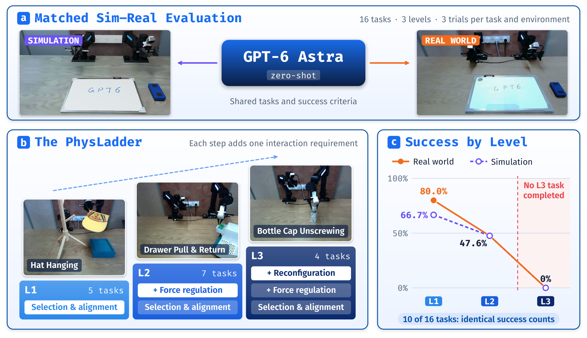
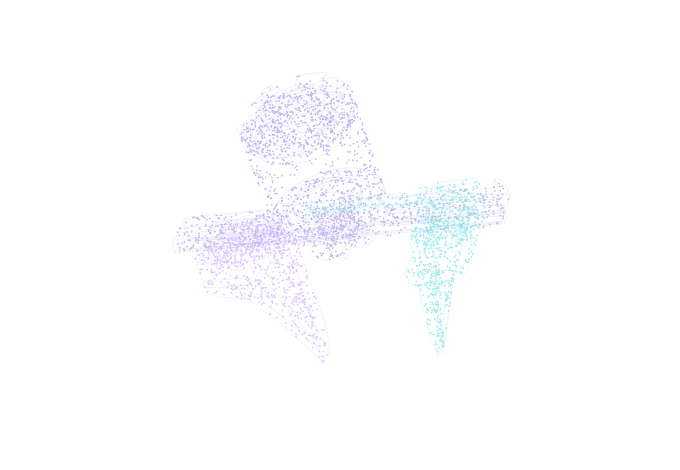
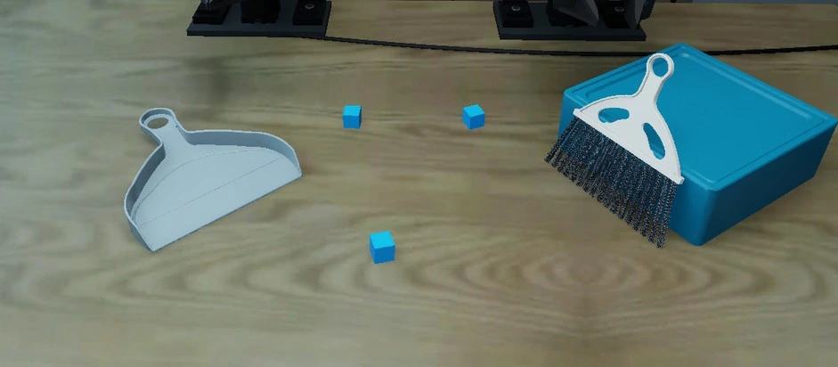
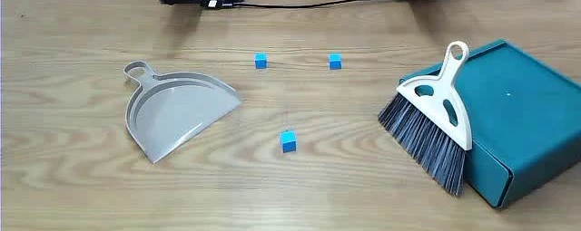
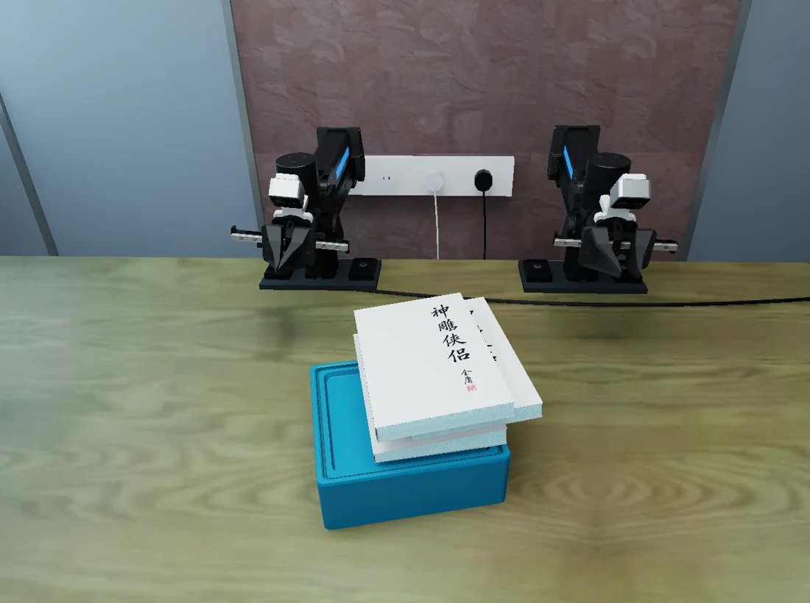

A FRONTIER MODEL. A PHYSICAL WORLD.
How High Can GPT-6 Astra Climb in Contact-Rich Manipulation?
PhysLadder: A Hierarchical, Matched Sim–Real Benchmark
for Physical Interaction
Sixteen everyday tasks. Three levels of physical interaction.
A paired simulation and real-world benchmark on ARX R5 (方舟).

A COLLABORATIVE RESEARCH EFFORT
Author affiliations01 / IN THE PHYSICAL WORLD
Same task.
Two realities.
From placing a marker to turning a cap.
Watch what transfers. See where it breaks.

Eight-second excerpts. Source playback speeds are preserved; some recordings are time-compressed. Sim and real have independent timelines. Outcomes refer to the selected trials.
02 / BUILDING THE CORRESPONDENCE
Matched down
to the details.
A shared embodiment. Measured objects.
Comparable views of the same physical problem.
OUR PHYSICAL PLATFORM
ARX R5 方舟
Intelligence at
the fingertips.
Two-finger grippers. A shared dual-arm platform.
Contact-rich interaction in both worlds.



Start from comparable conditions.
Measured tabletop geometry, object placement and support conditions establish the task before the robot moves.
Paper Figure 5(a) · Block sweeping workspace and initial object placement.
Geometry sets the contacts. Mass and friction shape the response.
Both matter when reasoning becomes physical action.
03 / THE PHYSICAL INTELLIGENCE LADDER
Understanding is a start.
Interaction is the test.
Increasing demands on contact,
force regulation and coordination.
Make contact.
Placement, insertion and alignment.
Get the geometry right.
Stay in control.
Sustained contact and force regulation.
Keep an interaction working.
Adapt the contact.
Changing contacts and coordinated forces.
Turn local progress into completion.
04 / LOOK CLOSER
Every task.
Every starting point.
Choose a task. Switch the camera.
Slide between independently selectable configurations.
Book pulling


Reproduce this configuration +
Initial-state renderings. Variant 01 is a preserved alternative configuration; some Level 3 variants also differ in scoring or budget. Task IDs follow the runnable repository configurations.
05 / FROM OBSERVATION TO ACTION
A loop grounded
in the world.
Observe
Task instructions, three camera views, robot state and execution feedback.
Act
Structured model commands, validated and executed through a shared robot stack.
Evaluate
Independent, task-specific criteria with recorded calls, timing and outcomes.
OPEN RESEARCH / OPEN EXPLORATION
Your next experiment
starts here.
Versioned configurations. Verified assets.
A shared execution stack for all 32 settings.
python -m pip install -e '.[test]'
python tools/verify_runtime_assets.py --usd
python tools/release/check_task_contract.py
python tools/reproduce.py --tasks L2-02_variant01This prints a plan. Configure Isaac Sim 5.1, cuRobo and model access before adding --execute.